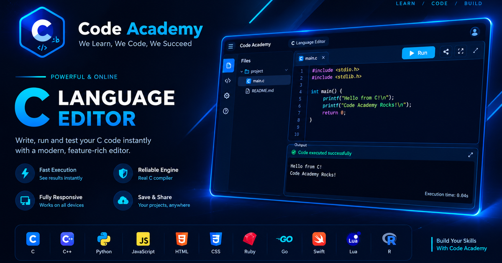

Code Academy · C
C Editor
C editor with compiler-backed execution, diagnostics and a wide output view.
Write and organize main.c with the shared Code Academy engine. Supported runs open in a broad preview; execution errors are surfaced in the console panel. For compiler-backed languages, the first run explains when code is sent to the external compiler service.
Your saved projects remain associated with your signed-in Code Academy account. Rich link previews use this page's title, description and root-level preview image.
